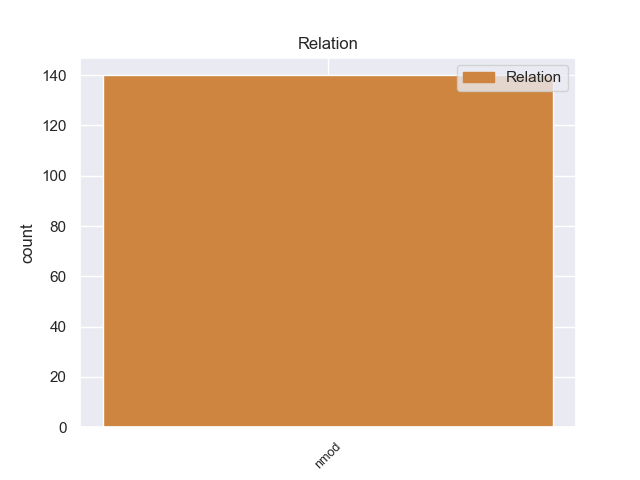
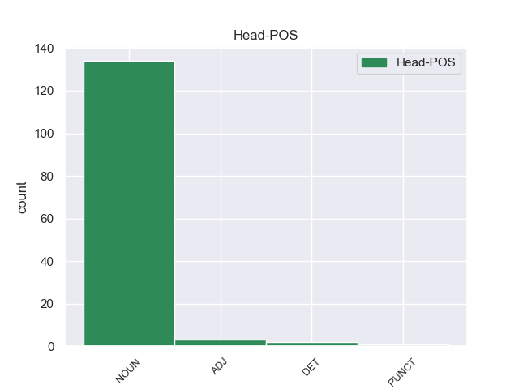
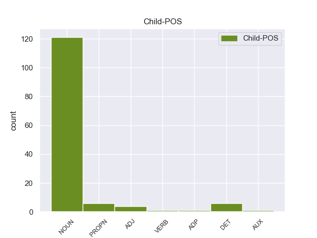

Distribution of features within this leaf



Agreement Rules sorted by frequency.
- When the dependent token is the nominal modifier(nmod) of the head token, and the head token is NOUN and the dependent token is NOUN.
1 Όταν _ _ _ _ 0 _ _ _
2 η _ _ _ _ 0 _ _ _
3 Γερμανία _ _ _ _ 0 _ _ _
4 υπέγραψε υπέγραψες NOUN _ Case=Acc|Gender=Fem|Number=Sing 0 _ _ _
5 ανακωχή ο NOUN _ Case=Acc|Gender=Fem|Number=Sing 4 nmod _ _
6 , _ _ _ _ 0 _ _ _
7 συνήλθε _ _ _ _ 0 _ _ _
8 σ _ _ _ _ 0 _ _ _
9 το _ _ _ _ 0 _ _ _
10 Παρίσι _ _ _ _ 0 _ _ _
11 η _ _ _ _ 0 _ _ _
12 συνδιάσκεψη _ _ _ _ 0 _ _ _
13 της _ _ _ _ 0 _ _ _
14 ειρήνης _ _ _ _ 0 _ _ _
15 , _ _ _ _ 0 _ _ _
16 όπου _ _ _ _ 0 _ _ _
17 ο _ _ _ _ 0 _ _ _
18 Βενιζέλος _ _ _ _ 0 _ _ _
19 παρέστη _ _ _ _ 0 _ _ _
20 ως _ _ _ _ 0 _ _ _
21 αντιπρόσωπος _ _ _ _ 0 _ _ _
22 της _ _ _ _ 0 _ _ _
23 Ελλάδας _ _ _ _ 0 _ _ _
24 και _ _ _ _ 0 _ _ _
25 πρόβαλε _ _ _ _ 0 _ _ _
26 τις _ _ _ _ 0 _ _ _
27 αξιώσεις _ _ _ _ 0 _ _ _
28 της _ _ _ _ 0 _ _ _
29 χώρας _ _ _ _ 0 _ _ _
30 μας _ _ _ _ 0 _ _ _
31 , _ _ _ _ 0 _ _ _
32 οι _ _ _ _ 0 _ _ _
33 οποίες _ _ _ _ 0 _ _ _
34 έγιναν _ _ _ _ 0 _ _ _
35 σ _ _ _ _ 0 _ _ _
36 το _ _ _ _ 0 _ _ _
37 σύνολό _ _ _ _ 0 _ _ _
38 τους _ _ _ _ 0 _ _ _
39 δεκτές _ _ _ _ 0 _ _ _
40 με _ _ _ _ 0 _ _ _
41 τις _ _ _ _ 0 _ _ _
42 συνθήκες _ _ _ _ 0 _ _ _
43 του _ _ _ _ 0 _ _ _
44 Νεϊγύ _ _ _ _ 0 _ _ _
45 ( _ _ _ _ 0 _ _ _
46 27_Νοεμβρίου_1919 _ _ _ _ 0 _ _ _
47 ) _ _ _ _ 0 _ _ _
48 και _ _ _ _ 0 _ _ _
49 των _ _ _ _ 0 _ _ _
50 Σεβρών _ _ _ _ 0 _ _ _
51 ( _ _ _ _ 0 _ _ _
52 10_Αυγούστου_1920 _ _ _ _ 0 _ _ _
53 ) _ _ _ _ 0 _ _ _
54 . _ _ _ _ 0 _ _ _
1 από _ _ _ _ 0 _ _ _
2 πέρυσι _ _ _ _ 0 _ _ _
3 η _ _ _ _ 0 _ _ _
4 Ευρωπαϊκή _ _ _ _ 0 _ _ _
5 Ένωση _ _ _ _ 0 _ _ _
6 συμμετέχει _ _ _ _ 0 _ _ _
7 σ _ _ _ _ 0 _ _ _
8 τα _ _ _ _ 0 _ _ _
9 καθήκοντα _ _ _ _ 0 _ _ _
10 της _ _ _ _ 0 _ _ _
11 Κοινής _ _ _ _ 0 _ _ _
12 Επιτροπής _ _ _ _ 0 _ _ _
13 Ελέγχου έλεγχος NOUN NOUN Case=Gen|Gender=Masc|Number=Sing 0 _ _ _
14 της _ _ _ _ 0 _ _ _
15 Νότιας _ _ _ _ 0 _ _ _
16 Οσετίας Οσετία PROPN PROPN Case=Gen|Gender=Fem|Number=Sing 13 nmod _ SpaceAfter=No
17 , _ _ _ _ 0 _ _ _
18 αλλά _ _ _ _ 0 _ _ _
19 μένουν _ _ _ _ 0 _ _ _
20 πολλά _ _ _ _ 0 _ _ _
21 να _ _ _ _ 0 _ _ _
22 γίνουν _ _ _ _ 0 _ _ _
23 ακόμα _ _ _ _ 0 _ _ _
24 για _ _ _ _ 0 _ _ _
25 να _ _ _ _ 0 _ _ _
26 καταφέρουμε _ _ _ _ 0 _ _ _
27 να _ _ _ _ 0 _ _ _
28 ακούγεται _ _ _ _ 0 _ _ _
29 η _ _ _ _ 0 _ _ _
30 φωνή _ _ _ _ 0 _ _ _
31 της _ _ _ _ 0 _ _ _
32 Ένωσης _ _ _ _ 0 _ _ _
33 σε _ _ _ _ 0 _ _ _
34 ορισμένους _ _ _ _ 0 _ _ _
35 μεσολαβητικούς _ _ _ _ 0 _ _ _
36 κύκλους _ _ _ _ 0 _ _ _
37 . _ _ _ _ 0 _ _ _
1 Η _ _ _ _ 0 _ _ _
2 πτήση _ _ _ _ 0 _ _ _
3 της _ _ _ _ 0 _ _ _
4 αεροπορικής αεροπορικήςς NOUN _ Case=Acc|Gender=Fem|Number=Sing 0 _ _ _
5 εταιρείας _ _ _ _ 0 _ _ _
6 " _ _ _ _ 0 _ _ _
7 All ο ADJ _ Case=Acc|Gender=Fem|Number=Sing 4 nmod _ _
8 Nippon _ _ _ _ 0 _ _ _
9 " _ _ _ _ 0 _ _ _
10 με _ _ _ _ 0 _ _ _
11 129 _ _ _ _ 0 _ _ _
12 επιβάτες _ _ _ _ 0 _ _ _
13 πραγματοποίησε _ _ _ _ 0 _ _ _
14 αναγκαστική _ _ _ _ 0 _ _ _
15 προσγείωση _ _ _ _ 0 _ _ _
16 σ _ _ _ _ 0 _ _ _
17 το _ _ _ _ 0 _ _ _
18 Τακαμάτσου _ _ _ _ 0 _ _ _
19 , _ _ _ _ 0 _ _ _
20 ενώ _ _ _ _ 0 _ _ _
21 πετούσε _ _ _ _ 0 _ _ _
22 με _ _ _ _ 0 _ _ _
23 προορισμό _ _ _ _ 0 _ _ _
24 το _ _ _ _ 0 _ _ _
25 Τόκυο _ _ _ _ 0 _ _ _
26 . _ _ _ _ 0 _ _ _
1 Δεκαεννέα _ _ _ _ 0 _ _ _
2 κρατούμενοι _ _ _ _ 0 _ _ _
3 απέδρασαν _ _ _ _ 0 _ _ _
4 από _ _ _ _ 0 _ _ _
5 φυλακή φυλακής NOUN _ Case=Acc|Gender=Fem|Number=Sing 0 _ _ _
6 του _ _ _ _ 0 _ _ _
7 Ιράκ Ιράκ DET _ Case=Acc|Gender=Fem|Number=Sing 5 nmod _ _
1 Ας _ _ _ _ 0 _ _ _
2 ποντάρουμε _ _ _ _ 0 _ _ _
3 λοιπόν _ _ _ _ 0 _ _ _
4 σ _ _ _ _ 0 _ _ _
5 την _ _ _ _ 0 _ _ _
6 ικανότητά _ _ _ _ 0 _ _ _
7 της _ _ _ _ 0 _ _ _
8 να _ _ _ _ 0 _ _ _
9 επιφέρει _ _ _ _ 0 _ _ _
10 περαιτέρω _ _ _ _ 0 _ _ _
11 κινητοποιήσεις _ _ _ _ 0 _ _ _
12 σ _ _ _ _ 0 _ _ _
13 την _ _ _ _ 0 _ _ _
14 εαρινή εαρινός ADJ ADJ Case=Acc|Gender=Fem|Number=Sing 0 _ _ _
15 Σύνοδο σύνοδος NOUN NOUN Case=Acc|Gender=Fem|Number=Sing 14 nmod _ _
16 Κορυφής _ _ _ _ 0 _ _ _
17 της _ _ _ _ 0 _ _ _
18 Βαρκελώνης _ _ _ _ 0 _ _ _
19 ! _ _ _ _ 0 _ _ _
1 Σ _ _ _ _ 0 _ _ _
2 το _ _ _ _ 0 _ _ _
3 Ιράκ Ιράκ NOUN _ Case=Gen|Definite=Def|Gender=Fem|Number=Sing|PronType=Art 0 _ _ _
4 , _ _ _ _ 0 _ _ _
5 κατά _ _ _ _ 0 _ _ _
6 τη _ _ _ _ 0 _ _ _
7 διάρκεια _ _ _ _ 0 _ _ _
8 συγκρούσεων _ _ _ _ 0 _ _ _
9 μεταξύ _ _ _ _ 0 _ _ _
10 διαδηλωτών _ _ _ _ 0 _ _ _
11 ( _ _ _ _ 0 _ _ _
12 μέλη _ _ _ _ 0 _ _ _
13 της _ _ _ _ 0 _ _ _
14 σουνιτικής _ _ _ _ 0 _ _ _
15 μειονότητας _ _ _ _ 0 _ _ _
16 του _ _ _ _ 0 _ _ _
17 Ιράκ Ιράκ VERB _ Case=Gen|Definite=Def|Gender=Fem|Number=Sing|PronType=Art 3 nmod _ _
18 ) _ _ _ _ 0 _ _ _
19 και _ _ _ _ 0 _ _ _
20 στρατιωτών _ _ _ _ 0 _ _ _
21 , _ _ _ _ 0 _ _ _
22 πέντε _ _ _ _ 0 _ _ _
23 άτομα _ _ _ _ 0 _ _ _
24 έχασαν _ _ _ _ 0 _ _ _
25 τη _ _ _ _ 0 _ _ _
26 ζωή _ _ _ _ 0 _ _ _
27 τους _ _ _ _ 0 _ _ _
28 , _ _ _ _ 0 _ _ _
29 ενώ _ _ _ _ 0 _ _ _
30 άλλα _ _ _ _ 0 _ _ _
31 20 _ _ _ _ 0 _ _ _
32 σκοτώθηκαν _ _ _ _ 0 _ _ _
33 . _ _ _ _ 0 _ _ _
1 Η _ _ _ _ 0 _ _ _
2 Αλυκή _ _ _ _ 0 _ _ _
3 που _ _ _ _ 0 _ _ _
4 πήρε _ _ _ _ 0 _ _ _
5 το _ _ _ _ 0 _ _ _
6 όνομά νομά ADP _ Case=Acc|Gender=Fem|Number=Sing 10 nmod _ _
7 της _ _ _ _ 0 _ _ _
8 από _ _ _ _ 0 _ _ _
9 την _ _ _ _ 0 _ _ _
10 παραφθορά παραφθοός NOUN _ Case=Acc|Gender=Fem|Number=Sing 0 _ _ _
11 του _ _ _ _ 0 _ _ _
12 ονόματος _ _ _ _ 0 _ _ _
13 της _ _ _ _ 0 _ _ _
14 Αλίκης _ _ _ _ 0 _ _ _
15 , _ _ _ _ 0 _ _ _
16 βασίλισσας _ _ _ _ 0 _ _ _
17 της _ _ _ _ 0 _ _ _
18 χερσονήσου _ _ _ _ 0 _ _ _
19 αυτής _ _ _ _ 0 _ _ _
20 κατά _ _ _ _ 0 _ _ _
21 την _ _ _ _ 0 _ _ _
22 παράδοση _ _ _ _ 0 _ _ _
23 , _ _ _ _ 0 _ _ _
24 βρίσκεται _ _ _ _ 0 _ _ _
25 σ _ _ _ _ 0 _ _ _
26 το _ _ _ _ 0 _ _ _
27 νότιοδυτικό _ _ _ _ 0 _ _ _
28 τμήμα _ _ _ _ 0 _ _ _
29 της _ _ _ _ 0 _ _ _
30 Θάσου _ _ _ _ 0 _ _ _
31 και _ _ _ _ 0 _ _ _
32 ήκμασε _ _ _ _ 0 _ _ _
33 κατά _ _ _ _ 0 _ _ _
34 την _ _ _ _ 0 _ _ _
35 αρχαιότητα _ _ _ _ 0 _ _ _
36 κυρίως _ _ _ _ 0 _ _ _
37 λόγω _ _ _ _ 0 _ _ _
38 της _ _ _ _ 0 _ _ _
39 εξόρυξης _ _ _ _ 0 _ _ _
40 μαρμάρων _ _ _ _ 0 _ _ _
41 . _ _ _ _ 0 _ _ _
1 Το _ _ _ _ 0 _ _ _
2 2013 _ _ _ _ 0 _ _ _
3 η _ _ _ _ 0 _ _ _
4 Ελλάδα ελλάδας AUX _ Case=Acc|Definite=Def|Gender=Fem|Number=Sing|PronType=Art 39 nmod _ _
5 βρισκόταν _ _ _ _ 0 _ _ _
6 σ _ _ _ _ 0 _ _ _
7 την _ _ _ _ 0 _ _ _
8 85η _ _ _ _ 0 _ _ _
9 θέση _ _ _ _ 0 _ _ _
10 , _ _ _ _ 0 _ _ _
11 ενώ _ _ _ _ 0 _ _ _
12 το _ _ _ _ 0 _ _ _
13 2012 _ _ _ _ 0 _ _ _
14 σ _ _ _ _ 0 _ _ _
15 την _ _ _ _ 0 _ _ _
16 71η _ _ _ _ 0 _ _ _
17 , _ _ _ _ 0 _ _ _
18 που _ _ _ _ 0 _ _ _
19 σημαίνει _ _ _ _ 0 _ _ _
20 ότι _ _ _ _ 0 _ _ _
21 τα _ _ _ _ 0 _ _ _
22 τελευταία _ _ _ _ 0 _ _ _
23 δύο _ _ _ _ 0 _ _ _
24 χρόνια _ _ _ _ 0 _ _ _
25 η _ _ _ _ 0 _ _ _
26 Ελλάδα _ _ _ _ 0 _ _ _
27 υποχώρησε _ _ _ _ 0 _ _ _
28 28 _ _ _ _ 0 _ _ _
29 θέσεις _ _ _ _ 0 _ _ _
30 σ _ _ _ _ 0 _ _ _
31 την _ _ _ _ 0 _ _ _
32 παγκόσμια _ _ _ _ 0 _ _ _
33 κατάταξη _ _ _ _ 0 _ _ _
34 αναφορικά _ _ _ _ 0 _ _ _
35 με _ _ _ _ 0 _ _ _
36 την _ _ _ _ 0 _ _ _
37 ελευθερία _ _ _ _ 0 _ _ _
38 του _ _ _ _ 0 _ _ _
39 τύπου τύπους NOUN _ Case=Acc|Gender=Fem|Number=Sing 0 _ _ _
40 . _ _ _ _ 0 _ _ _
1 Αφέθηκαν _ _ _ _ 0 _ _ _
2 ελεύθεροι _ _ _ _ 0 _ _ _
3 δύο _ _ _ _ 0 _ _ _
4 ηγέτες ηγέτες DET _ Case=Acc|Gender=Fem|Number=Sing 0 _ _ _
5 της _ _ _ _ 0 _ _ _
6 Ρωσικής _ _ _ _ 0 _ _ _
7 Αντιπολίτευσης ο NOUN _ Case=Acc|Gender=Fem|Number=Sing 4 nmod _ _
1 . . PUNCT _ Case=Acc|Definite=Def|Gender=Fem|Number=Sing|PronType=Art 0 _ _ _
2 ( _ _ _ _ 0 _ _ _
3 EN enς DET _ Case=Acc|Definite=Def|Gender=Fem|Number=Sing|PronType=Art 1 nmod _ _
4 ) _ _ _ _ 0 _ _ _
Disagree Examples:
1 Η _ _ _ _ 0 _ _ _
2 επικοινωνία επικοινωνία NOUN NOUN Case=Nom|Gender=Fem|Number=Sing 0 _ _ _
3 του _ _ _ _ 0 _ _ _
4 φρουρίου φρούριο NOUN NOUN Case=Gen|Gender=Neut|Number=Sing 2 nmod _ _
5 με _ _ _ _ 0 _ _ _
6 την _ _ _ _ 0 _ _ _
7 ξηρά _ _ _ _ 0 _ _ _
8 γινόταν _ _ _ _ 0 _ _ _
9 με _ _ _ _ 0 _ _ _
10 μια _ _ _ _ 0 _ _ _
11 ξύλινη _ _ _ _ 0 _ _ _
12 κινητή _ _ _ _ 0 _ _ _
13 γέφυρα _ _ _ _ 0 _ _ _
14 , _ _ _ _ 0 _ _ _
15 η _ _ _ _ 0 _ _ _
16 οποία _ _ _ _ 0 _ _ _
17 ένωνε _ _ _ _ 0 _ _ _
18 την _ _ _ _ 0 _ _ _
19 πύλη _ _ _ _ 0 _ _ _
20 του _ _ _ _ 0 _ _ _
21 φρουρίου _ _ _ _ 0 _ _ _
22 με _ _ _ _ 0 _ _ _
23 το _ _ _ _ 0 _ _ _
24 απέναντι _ _ _ _ 0 _ _ _
25 ύψωμα _ _ _ _ 0 _ _ _
26 . _ _ _ _ 0 _ _ _
1 Η _ _ _ _ 0 _ _ _
2 επικοινωνία επικοινωνία NOUN NOUN Case=Nom|Gender=Fem|Number=Sing 0 _ _ _
3 του _ _ _ _ 0 _ _ _
4 φρουρίου _ _ _ _ 0 _ _ _
5 με _ _ _ _ 0 _ _ _
6 την _ _ _ _ 0 _ _ _
7 ξηρά ξηρά NOUN NOUN Case=Acc|Gender=Fem|Number=Sing 2 nmod _ _
8 γινόταν _ _ _ _ 0 _ _ _
9 με _ _ _ _ 0 _ _ _
10 μια _ _ _ _ 0 _ _ _
11 ξύλινη _ _ _ _ 0 _ _ _
12 κινητή _ _ _ _ 0 _ _ _
13 γέφυρα _ _ _ _ 0 _ _ _
14 , _ _ _ _ 0 _ _ _
15 η _ _ _ _ 0 _ _ _
16 οποία _ _ _ _ 0 _ _ _
17 ένωνε _ _ _ _ 0 _ _ _
18 την _ _ _ _ 0 _ _ _
19 πύλη _ _ _ _ 0 _ _ _
20 του _ _ _ _ 0 _ _ _
21 φρουρίου _ _ _ _ 0 _ _ _
22 με _ _ _ _ 0 _ _ _
23 το _ _ _ _ 0 _ _ _
24 απέναντι _ _ _ _ 0 _ _ _
25 ύψωμα _ _ _ _ 0 _ _ _
26 . _ _ _ _ 0 _ _ _
1 Η _ _ _ _ 0 _ _ _
2 επικοινωνία _ _ _ _ 0 _ _ _
3 του _ _ _ _ 0 _ _ _
4 φρουρίου _ _ _ _ 0 _ _ _
5 με _ _ _ _ 0 _ _ _
6 την _ _ _ _ 0 _ _ _
7 ξηρά _ _ _ _ 0 _ _ _
8 γινόταν _ _ _ _ 0 _ _ _
9 με _ _ _ _ 0 _ _ _
10 μια _ _ _ _ 0 _ _ _
11 ξύλινη _ _ _ _ 0 _ _ _
12 κινητή _ _ _ _ 0 _ _ _
13 γέφυρα _ _ _ _ 0 _ _ _
14 , _ _ _ _ 0 _ _ _
15 η _ _ _ _ 0 _ _ _
16 οποία _ _ _ _ 0 _ _ _
17 ένωνε _ _ _ _ 0 _ _ _
18 την _ _ _ _ 0 _ _ _
19 πύλη πύλη NOUN NOUN Case=Acc|Gender=Fem|Number=Sing 0 _ _ _
20 του _ _ _ _ 0 _ _ _
21 φρουρίου φρούριο NOUN NOUN Case=Gen|Gender=Neut|Number=Sing 19 nmod _ _
22 με _ _ _ _ 0 _ _ _
23 το _ _ _ _ 0 _ _ _
24 απέναντι _ _ _ _ 0 _ _ _
25 ύψωμα _ _ _ _ 0 _ _ _
26 . _ _ _ _ 0 _ _ _
1 Επίσης _ _ _ _ 0 _ _ _
2 , _ _ _ _ 0 _ _ _
3 οι _ _ _ _ 0 _ _ _
4 αρνητικές _ _ _ _ 0 _ _ _
5 τάσεις τάση NOUN NOUN Case=Nom|Gender=Fem|Number=Plur 0 _ _ _
6 σ _ _ _ _ 0 _ _ _
7 την _ _ _ _ 0 _ _ _
8 οικονομική _ _ _ _ 0 _ _ _
9 συγκυρία συγκυρία NOUN NOUN Case=Acc|Gender=Fem|Number=Sing 5 nmod _ _
10 δεν _ _ _ _ 0 _ _ _
11 πρέπει _ _ _ _ 0 _ _ _
12 να _ _ _ _ 0 _ _ _
13 χρησιμοποιούνται _ _ _ _ 0 _ _ _
14 ως _ _ _ _ 0 _ _ _
15 άλλοθι _ _ _ _ 0 _ _ _
16 , _ _ _ _ 0 _ _ _
17 επιδιώκοντας _ _ _ _ 0 _ _ _
18 τη _ _ _ _ 0 _ _ _
19 χαλάρωση _ _ _ _ 0 _ _ _
20 αυτών _ _ _ _ 0 _ _ _
21 των _ _ _ _ 0 _ _ _
22 δεσμεύσεων _ _ _ _ 0 _ _ _
23 . _ _ _ _ 0 _ _ _
1 Επίσης _ _ _ _ 0 _ _ _
2 , _ _ _ _ 0 _ _ _
3 οι _ _ _ _ 0 _ _ _
4 αρνητικές _ _ _ _ 0 _ _ _
5 τάσεις _ _ _ _ 0 _ _ _
6 σ _ _ _ _ 0 _ _ _
7 την _ _ _ _ 0 _ _ _
8 οικονομική _ _ _ _ 0 _ _ _
9 συγκυρία _ _ _ _ 0 _ _ _
10 δεν _ _ _ _ 0 _ _ _
11 πρέπει _ _ _ _ 0 _ _ _
12 να _ _ _ _ 0 _ _ _
13 χρησιμοποιούνται _ _ _ _ 0 _ _ _
14 ως _ _ _ _ 0 _ _ _
15 άλλοθι _ _ _ _ 0 _ _ _
16 , _ _ _ _ 0 _ _ _
17 επιδιώκοντας _ _ _ _ 0 _ _ _
18 τη _ _ _ _ 0 _ _ _
19 χαλάρωση χαλάρωση NOUN NOUN Case=Acc|Gender=Fem|Number=Sing 0 _ _ _
20 αυτών _ _ _ _ 0 _ _ _
21 των _ _ _ _ 0 _ _ _
22 δεσμεύσεων δέσμευση NOUN NOUN Case=Gen|Gender=Fem|Number=Plur 19 nmod _ SpaceAfter=No
23 . _ _ _ _ 0 _ _ _